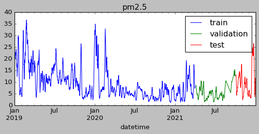
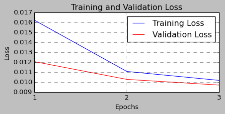
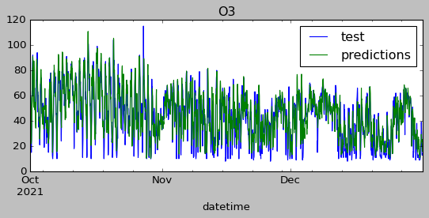

%%capture
!pip install skforecast
# Libraries
# ==============================================================================
import os
os.environ["KERAS_BACKEND"] = "torch" # 'tensorflow', 'jax´ or 'torch'
import keras
import numpy as np
import pandas as pd
import matplotlib.pyplot as plt
from sklearn.preprocessing import MinMaxScaler
import skforecast
from skforecast.datasets import fetch_dataset
from skforecast.plot import set_dark_theme
from skforecast.ForecasterRnn import ForecasterRnn
from skforecast.ForecasterRnn.utils import create_and_compile_model
from skforecast.model_selection_multiseries import backtesting_forecaster_multiseries
from keras.optimizers import Adam
from keras.losses import MeanSquaredError
from keras.callbacks import EarlyStopping
import warnings
warnings.filterwarnings('once')
print(f"skforecast version: {skforecast.__version__}")
print(f"keras version: {keras.__version__}")
if keras.__version__ > "3.0":
print(f"Using backend: {keras.backend.backend()}")
if keras.backend.backend() == "tensorflow":
import tensorflow
print(f"tensorflow version: {tensorflow.__version__}")
elif keras.backend.backend() == "torch":
import torch
print(f"torch version: {torch.__version__}")
else:
print("Backend not recognized. Please use 'tensorflow' or 'torch'.")
---------------------------------------------------------------------------
ModuleNotFoundError Traceback (most recent call last)
Cell In[2], line 5
3 import os
4 os.environ["KERAS_BACKEND"] = "torch" # 'tensorflow', 'jax´ or 'torch'
----> 5 import keras
7 import numpy as np
8 import pandas as pd
File /env/lib/python3.10/site-packages/keras/__init__.py:4
1 import os
3 # DO NOT EDIT. Generated by api_gen.sh
----> 4 from keras.api import DTypePolicy
5 from keras.api import FloatDTypePolicy
6 from keras.api import Function
File /env/lib/python3.10/site-packages/keras/api/__init__.py:7
1 """DO NOT EDIT.
2
3 This file was autogenerated. Do not edit it by hand,
4 since your modifications would be overwritten.
5 """
----> 7 from keras.api import _tf_keras
8 from keras.api import activations
9 from keras.api import applications
File /env/lib/python3.10/site-packages/keras/api/_tf_keras/__init__.py:1
----> 1 from keras.api._tf_keras import keras
File /env/lib/python3.10/site-packages/keras/api/_tf_keras/keras/__init__.py:7
1 """DO NOT EDIT.
2
3 This file was autogenerated. Do not edit it by hand,
4 since your modifications would be overwritten.
5 """
----> 7 from keras.api import activations
8 from keras.api import applications
9 from keras.api import callbacks
File /env/lib/python3.10/site-packages/keras/api/activations/__init__.py:7
1 """DO NOT EDIT.
2
3 This file was autogenerated. Do not edit it by hand,
4 since your modifications would be overwritten.
5 """
----> 7 from keras.src.activations import deserialize
8 from keras.src.activations import get
9 from keras.src.activations import serialize
File /env/lib/python3.10/site-packages/keras/src/__init__.py:1
----> 1 from keras.src import activations
2 from keras.src import applications
3 from keras.src import backend
File /env/lib/python3.10/site-packages/keras/src/activations/__init__.py:3
1 import types
----> 3 from keras.src.activations.activations import elu
4 from keras.src.activations.activations import exponential
5 from keras.src.activations.activations import gelu
File /env/lib/python3.10/site-packages/keras/src/activations/activations.py:1
----> 1 from keras.src import backend
2 from keras.src import ops
3 from keras.src.api_export import keras_export
File /env/lib/python3.10/site-packages/keras/src/backend/__init__.py:7
1 from keras.src.backend.config import backend
3 if backend() == "torch":
4 # When using the torch backend,
5 # torch needs to be imported first, otherwise it will segfault
6 # upon import.
----> 7 import torch
9 from keras.src.backend.common.dtypes import result_type
10 from keras.src.backend.common.keras_tensor import KerasTensor
ModuleNotFoundError: No module named 'torch'
# Data download
# ==============================================================================
import warnings
# Ignore a specific warning category
warnings.filterwarnings("ignore", category=UserWarning)
air_quality = fetch_dataset(name="air_quality_valencia")
# Data preparation
# ==============================================================================
air_quality = air_quality.interpolate(method="linear")
air_quality = air_quality.sort_index()
air_quality.head()
air_quality_valencia
--------------------
Hourly measures of several air chemical pollutant (pm2.5, co, no, no2, pm10,
nox, o3, so2) at Valencia city.
Red de Vigilancia y Control de la Contaminación Atmosférica, 46250054-València
- Centre, https://mediambient.gva.es/es/web/calidad-ambiental/datos-historicos.
Shape of the dataset: (26304, 10)
| pm2.5 | co | no | no2 | pm10 | nox | o3 | veloc. | direc. | so2 | |
|---|---|---|---|---|---|---|---|---|---|---|
| datetime | ||||||||||
| 2019-01-01 00:00:00 | 19.0 | 0.2 | 3.0 | 36.0 | 22.0 | 40.0 | 16.0 | 0.5 | 262.0 | 8.0 |
| 2019-01-01 01:00:00 | 26.0 | 0.1 | 2.0 | 40.0 | 32.0 | 44.0 | 6.0 | 0.6 | 248.0 | 8.0 |
| 2019-01-01 02:00:00 | 31.0 | 0.1 | 11.0 | 42.0 | 36.0 | 58.0 | 3.0 | 0.3 | 224.0 | 8.0 |
| 2019-01-01 03:00:00 | 30.0 | 0.1 | 15.0 | 41.0 | 35.0 | 63.0 | 3.0 | 0.2 | 220.0 | 10.0 |
| 2019-01-01 04:00:00 | 30.0 | 0.1 | 16.0 | 39.0 | 36.0 | 63.0 | 3.0 | 0.4 | 221.0 | 11.0 |
# Checking the frequency of the time series
# ==============================================================================
print(f"Index: {air_quality.index.dtype}")
print(f"Frequency: {air_quality.index.freq}")
Index: datetime64[ns]
Frequency: <Hour>
# Split train-validation-test
# ==============================================================================
end_train = "2021-03-31 23:59:00"
end_validation = "2021-09-30 23:59:00"
air_quality_train = air_quality.loc[:end_train, :].copy()
air_quality_val = air_quality.loc[end_train:end_validation, :].copy()
air_quality_test = air_quality.loc[end_validation:, :].copy()
print(
f"Dates train : {air_quality_train.index.min()} --- "
f"{air_quality_train.index.max()} (n={len(air_quality_train)})"
)
print(
f"Dates validation : {air_quality_val.index.min()} --- "
f"{air_quality_val.index.max()} (n={len(air_quality_val)})"
)
print(
f"Dates test : {air_quality_test.index.min()} --- "
f"{air_quality_test.index.max()} (n={len(air_quality_test)})"
)
Dates train : 2019-01-01 00:00:00 --- 2021-03-31 23:00:00 (n=19704)
Dates validation : 2021-04-01 00:00:00 --- 2021-09-30 23:00:00 (n=4392)
Dates test : 2021-10-01 00:00:00 --- 2021-12-31 23:00:00 (n=2208)
import warnings
# Ignore a specific warning category
warnings.filterwarnings("ignore", category=UserWarning)
# Plotting one feature
# ==============================================================================
#set_dark_theme()
plt.style.use('classic')
fig, ax = plt.subplots(figsize=(8, 3))
air_quality_train["pm2.5"].rolling(100).mean().plot(ax=ax, label="train")
air_quality_val["pm2.5"].rolling(100).mean().plot(ax=ax, label="validation")
air_quality_test["pm2.5"].rolling(100).mean().plot(ax=ax, label="test")
ax.set_title("pm2.5")
ax.legend();

# Create model
# ==============================================================================
series = ["o3"] # Series used as predictors
levels = ["o3"] # Target serie to predict
lags = 32 # Past time steps to be used to predict the target
steps = 3 # Future time steps to be predicted
data = air_quality[series].copy()
data_train = air_quality_train[series].copy()
data_val = air_quality_val[series].copy()
data_test = air_quality_test[series].copy()
model = create_and_compile_model(
series=data_train,
levels=levels,
lags=lags,
steps=steps,
recurrent_layer="LSTM",
recurrent_units=4,
dense_units=16,
optimizer=Adam(learning_rate=0.01),
loss=MeanSquaredError()
)
model.summary()
keras version: 3.4.1
Using backend: torch
torch version: 2.4.1+cu121
Model: "functional_1"
┏━━━━━━━━━━━━━━━━━━━━━━━━━━━━━━━━━━━━━━┳━━━━━━━━━━━━━━━━━━━━━━━━━━━━━┳━━━━━━━━━━━━━━━━━┓ ┃ Layer (type) ┃ Output Shape ┃ Param # ┃ ┡━━━━━━━━━━━━━━━━━━━━━━━━━━━━━━━━━━━━━━╇━━━━━━━━━━━━━━━━━━━━━━━━━━━━━╇━━━━━━━━━━━━━━━━━┩ │ input_layer_1 (InputLayer) │ (None, 32, 1) │ 0 │ ├──────────────────────────────────────┼─────────────────────────────┼─────────────────┤ │ lstm_1 (LSTM) │ (None, 4) │ 96 │ ├──────────────────────────────────────┼─────────────────────────────┼─────────────────┤ │ dense_2 (Dense) │ (None, 16) │ 80 │ ├──────────────────────────────────────┼─────────────────────────────┼─────────────────┤ │ dense_3 (Dense) │ (None, 3) │ 51 │ ├──────────────────────────────────────┼─────────────────────────────┼─────────────────┤ │ reshape_1 (Reshape) │ (None, 3, 1) │ 0 │ └──────────────────────────────────────┴─────────────────────────────┴─────────────────┘
Total params: 227 (908.00 B)
Trainable params: 227 (908.00 B)
Non-trainable params: 0 (0.00 B)
import warnings
# Ignore a specific warning category
warnings.filterwarnings("ignore", category=UserWarning)
# Forecaster Definition
# ==============================================================================
forecaster = ForecasterRnn(
regressor=model,
levels=levels,
transformer_series=MinMaxScaler(),
fit_kwargs={
"epochs": 3, # Number of epochs to train the model.
"batch_size": 32, # Batch size to train the model.
"callbacks": [
EarlyStopping(monitor="val_loss", patience=5)
], # Callback to stop training when it is no longer learning.
"series_val": data_val, # Validation data for model training.
},
)
forecaster
=============
ForecasterRnn
=============
Regressor: <Functional name=functional_1, built=True>
Lags: [ 1 2 3 4 5 6 7 8 9 10 11 12 13 14 15 16 17 18 19 20 21 22 23 24
25 26 27 28 29 30 31 32]
Transformer for series: MinMaxScaler()
Window size: 32
Target series, levels: ['o3']
Multivariate series (names): None
Maximum steps predicted: [1 2 3]
Training range: None
Training index type: None
Training index frequency: None
Model parameters: {'name': 'functional_1', 'trainable': True, 'layers': [{'module': 'keras.layers', 'class_name': 'InputLayer', 'config': {'batch_shape': (None, 32, 1), 'dtype': 'float32', 'sparse': False, 'name': 'input_layer_1'}, 'registered_name': None, 'name': 'input_layer_1', 'inbound_nodes': []}, {'module': 'keras.layers', 'class_name': 'LSTM', 'config': {'name': 'lstm_1', 'trainable': True, 'dtype': {'module': 'keras', 'class_name': 'DTypePolicy', 'config': {'name': 'float32'}, 'registered_name': None}, 'return_sequences': False, 'return_state': False, 'go_backwards': False, 'stateful': False, 'unroll': False, 'zero_output_for_mask': False, 'units': 4, 'activation': 'relu', 'recurrent_activation': 'sigmoid', 'use_bias': True, 'kernel_initializer': {'module': 'keras.initializers', 'class_name': 'GlorotUniform', 'config': {'seed': None}, 'registered_name': None}, 'recurrent_initializer': {'module': 'keras.initializers', 'class_name': 'OrthogonalInitializer', 'config': {'gain': 1.0, 'seed': None}, 'registered_name': None}, 'bias_initializer': {'module': 'keras.initializers', 'class_name': 'Zeros', 'config': {}, 'registered_name': None}, 'unit_forget_bias': True, 'kernel_regularizer': None, 'recurrent_regularizer': None, 'bias_regularizer': None, 'activity_regularizer': None, 'kernel_constraint': None, 'recurrent_constraint': None, 'bias_constraint': None, 'dropout': 0.0, 'recurrent_dropout': 0.0, 'seed': None}, 'registered_name': None, 'build_config': {'input_shape': (None, 32, 1)}, 'name': 'lstm_1', 'inbound_nodes': [{'args': ({'class_name': '__keras_tensor__', 'config': {'shape': (None, 32, 1), 'dtype': 'float32', 'keras_history': ['input_layer_1', 0, 0]}},), 'kwargs': {'training': False, 'mask': None}}]}, {'module': 'keras.layers', 'class_name': 'Dense', 'config': {'name': 'dense_2', 'trainable': True, 'dtype': {'module': 'keras', 'class_name': 'DTypePolicy', 'config': {'name': 'float32'}, 'registered_name': None}, 'units': 16, 'activation': 'relu', 'use_bias': True, 'kernel_initializer': {'module': 'keras.initializers', 'class_name': 'GlorotUniform', 'config': {'seed': None}, 'registered_name': None}, 'bias_initializer': {'module': 'keras.initializers', 'class_name': 'Zeros', 'config': {}, 'registered_name': None}, 'kernel_regularizer': None, 'bias_regularizer': None, 'kernel_constraint': None, 'bias_constraint': None}, 'registered_name': None, 'build_config': {'input_shape': (None, 4)}, 'name': 'dense_2', 'inbound_nodes': [{'args': ({'class_name': '__keras_tensor__', 'config': {'shape': (None, 4), 'dtype': 'float32', 'keras_history': ['lstm_1', 0, 0]}},), 'kwargs': {}}]}, {'module': 'keras.layers', 'class_name': 'Dense', 'config': {'name': 'dense_3', 'trainable': True, 'dtype': {'module': 'keras', 'class_name': 'DTypePolicy', 'config': {'name': 'float32'}, 'registered_name': None}, 'units': 3, 'activation': 'linear', 'use_bias': True, 'kernel_initializer': {'module': 'keras.initializers', 'class_name': 'GlorotUniform', 'config': {'seed': None}, 'registered_name': None}, 'bias_initializer': {'module': 'keras.initializers', 'class_name': 'Zeros', 'config': {}, 'registered_name': None}, 'kernel_regularizer': None, 'bias_regularizer': None, 'kernel_constraint': None, 'bias_constraint': None}, 'registered_name': None, 'build_config': {'input_shape': (None, 16)}, 'name': 'dense_3', 'inbound_nodes': [{'args': ({'class_name': '__keras_tensor__', 'config': {'shape': (None, 16), 'dtype': 'float32', 'keras_history': ['dense_2', 0, 0]}},), 'kwargs': {}}]}, {'module': 'keras.layers', 'class_name': 'Reshape', 'config': {'name': 'reshape_1', 'trainable': True, 'dtype': {'module': 'keras', 'class_name': 'DTypePolicy', 'config': {'name': 'float32'}, 'registered_name': None}, 'target_shape': (3, 1)}, 'registered_name': None, 'build_config': {'input_shape': (None, 3)}, 'name': 'reshape_1', 'inbound_nodes': [{'args': ({'class_name': '__keras_tensor__', 'config': {'shape': (None, 3), 'dtype': 'float32', 'keras_history': ['dense_3', 0, 0]}},), 'kwargs': {}}]}], 'input_layers': [['input_layer_1', 0, 0]], 'output_layers': [['reshape_1', 0, 0]]}
Compile parameters: {'optimizer': {'module': 'keras.src.backend.torch.optimizers.torch_adam', 'class_name': 'Adam', 'config': {'name': 'adam', 'learning_rate': 0.009999999776482582, 'weight_decay': None, 'clipnorm': None, 'global_clipnorm': None, 'clipvalue': None, 'use_ema': False, 'ema_momentum': 0.99, 'ema_overwrite_frequency': None, 'loss_scale_factor': None, 'gradient_accumulation_steps': None, 'beta_1': 0.9, 'beta_2': 0.999, 'epsilon': 1e-07, 'amsgrad': False}, 'registered_name': 'Adam'}, 'loss': {'module': 'keras.losses', 'class_name': 'MeanSquaredError', 'config': {'name': 'mean_squared_error', 'reduction': 'sum_over_batch_size'}, 'registered_name': None}, 'loss_weights': None, 'metrics': None, 'weighted_metrics': None, 'run_eagerly': False, 'steps_per_execution': 1, 'jit_compile': False}
fit_kwargs: {'epochs': 3, 'batch_size': 32, 'callbacks': [<keras.src.callbacks.early_stopping.EarlyStopping object at 0x7c842c3c3700>]}
Creation date: 2024-10-13 21:26:58
Last fit date: None
Skforecast version: 0.13.0
Python version: 3.10.12
Forecaster id: None
# Fit forecaster
# ==============================================================================
forecaster.fit(data_train)
Epoch 1/3
615/615 ━━━━━━━━━━━━━━━━━━━━ 28s 46ms/step - loss: 0.0262 - val_loss: 0.0121
Epoch 2/3
615/615 ━━━━━━━━━━━━━━━━━━━━ 28s 46ms/step - loss: 0.0113 - val_loss: 0.0103
Epoch 3/3
615/615 ━━━━━━━━━━━━━━━━━━━━ 28s 46ms/step - loss: 0.0101 - val_loss: 0.0097
# Track training and overfitting
# ==============================================================================
fig, ax = plt.subplots(figsize=(6, 2.5))
forecaster.plot_history(ax=ax)

predictions = forecaster.predict()
predictions
| o3 | |
|---|---|
| 2021-04-01 00:00:00 | 46.854664 |
| 2021-04-01 01:00:00 | 41.249390 |
| 2021-04-01 02:00:00 | 37.612095 |
# Specific step predictions
# ==============================================================================
predictions = forecaster.predict(steps=[1, 3])
predictions
| o3 | |
|---|---|
| 2021-04-01 00:00:00 | 46.854664 |
| 2021-04-01 02:00:00 | 37.612095 |
# Backtesting
# ==============================================================================
metrics, predictions = backtesting_forecaster_multiseries(
forecaster=forecaster,
steps=forecaster.max_step,
series=data,
levels=forecaster.levels,
initial_train_size=len(data.loc[:end_validation, :]),
metric="mean_absolute_error",
verbose=False,
refit=False,
)
<frozen importlib._bootstrap>:914: ImportWarning: _PyDrive2ImportHook.find_spec() not found; falling back to find_module()
<frozen importlib._bootstrap>:914: ImportWarning: _PyDriveImportHook.find_spec() not found; falling back to find_module()
<frozen importlib._bootstrap>:914: ImportWarning: _GenerativeAIImportHook.find_spec() not found; falling back to find_module()
<frozen importlib._bootstrap>:914: ImportWarning: _OpenCVImportHook.find_spec() not found; falling back to find_module()
<frozen importlib._bootstrap>:914: ImportWarning: APICoreClientInfoImportHook.find_spec() not found; falling back to find_module()
<frozen importlib._bootstrap>:914: ImportWarning: _BokehImportHook.find_spec() not found; falling back to find_module()
<frozen importlib._bootstrap>:914: ImportWarning: _AltairImportHook.find_spec() not found; falling back to find_module()
Epoch 1/3
752/752 ━━━━━━━━━━━━━━━━━━━━ 34s 45ms/step - loss: 0.0096 - val_loss: 0.0092
Epoch 2/3
752/752 ━━━━━━━━━━━━━━━━━━━━ 33s 44ms/step - loss: 0.0093 - val_loss: 0.0090
Epoch 3/3
752/752 ━━━━━━━━━━━━━━━━━━━━ 34s 45ms/step - loss: 0.0093 - val_loss: 0.0094
# Backtesting predictions
# ==============================================================================
predictions
| o3 | |
|---|---|
| 2021-10-01 00:00:00 | 54.279167 |
| 2021-10-01 01:00:00 | 51.087540 |
| 2021-10-01 02:00:00 | 47.131710 |
| 2021-10-01 03:00:00 | 58.876236 |
| 2021-10-01 04:00:00 | 52.949020 |
| ... | ... |
| 2021-12-31 19:00:00 | 23.412123 |
| 2021-12-31 20:00:00 | 20.543554 |
| 2021-12-31 21:00:00 | 15.827055 |
| 2021-12-31 22:00:00 | 17.455601 |
| 2021-12-31 23:00:00 | 18.529039 |
2208 rows × 1 columns
# Plotting predictions vs real values in the test set
# ==============================================================================
fig, ax = plt.subplots(figsize=(8, 3))
data_test["o3"].plot(ax=ax, label="test")
predictions["o3"].plot(ax=ax, label="predictions")
ax.set_title("O3")
ax.legend();

<frozen importlib._bootstrap>:914: ImportWarning: _PyDrive2ImportHook.find_spec() not found; falling back to find_module()
<frozen importlib._bootstrap>:914: ImportWarning: _PyDriveImportHook.find_spec() not found; falling back to find_module()
<frozen importlib._bootstrap>:914: ImportWarning: _GenerativeAIImportHook.find_spec() not found; falling back to find_module()
<frozen importlib._bootstrap>:914: ImportWarning: _OpenCVImportHook.find_spec() not found; falling back to find_module()
<frozen importlib._bootstrap>:914: ImportWarning: APICoreClientInfoImportHook.find_spec() not found; falling back to find_module()
<frozen importlib._bootstrap>:914: ImportWarning: _BokehImportHook.find_spec() not found; falling back to find_module()
<frozen importlib._bootstrap>:914: ImportWarning: _AltairImportHook.find_spec() not found; falling back to find_module()
# Backtesting metrics
# ==============================================================================
metrics
| levels | mean_absolute_error | |
|---|---|---|
| 0 | o3 | 8.417875 |
# % Error vs series mean
# ==============================================================================
rel_mse = 100 * metrics.loc[0, 'mean_absolute_error'] / np.mean(data["o3"])
print(f"Serie mean: {np.mean(data['o3']):0.2f}")
print(f"Relative error (mae): {rel_mse:0.2f} %")
Serie mean: 54.52
Relative error (mae): 15.44 %
Multistep-multi series#
# Model creation
# ==============================================================================
# Time series used in the training. Now, it is multiseries
series = ['pm2.5', 'co', 'no', 'no2', 'pm10', 'nox', 'o3', 'veloc.', 'direc.','so2']
levels = ["o3"]
lags = 32
steps = 5
data = air_quality[series].copy()
data_train = air_quality_train[series].copy()
data_val = air_quality_val[series].copy()
data_test = air_quality_test[series].copy()
model = create_and_compile_model(
series=data_train,
levels=levels,
lags=lags,
steps=steps,
recurrent_layer="LSTM",
recurrent_units=[100, 50],
dense_units=[64, 32],
optimizer=Adam(learning_rate=0.01),
loss=MeanSquaredError()
)
model.summary()
keras version: 3.4.1
Using backend: torch
torch version: 2.4.1+cu121
Model: "functional_2"
┏━━━━━━━━━━━━━━━━━━━━━━━━━━━━━━━━━━━━━━┳━━━━━━━━━━━━━━━━━━━━━━━━━━━━━┳━━━━━━━━━━━━━━━━━┓ ┃ Layer (type) ┃ Output Shape ┃ Param # ┃ ┡━━━━━━━━━━━━━━━━━━━━━━━━━━━━━━━━━━━━━━╇━━━━━━━━━━━━━━━━━━━━━━━━━━━━━╇━━━━━━━━━━━━━━━━━┩ │ input_layer_2 (InputLayer) │ (None, 32, 10) │ 0 │ ├──────────────────────────────────────┼─────────────────────────────┼─────────────────┤ │ lstm_2 (LSTM) │ (None, 32, 100) │ 44,400 │ ├──────────────────────────────────────┼─────────────────────────────┼─────────────────┤ │ lstm_3 (LSTM) │ (None, 50) │ 30,200 │ ├──────────────────────────────────────┼─────────────────────────────┼─────────────────┤ │ dense_4 (Dense) │ (None, 64) │ 3,264 │ ├──────────────────────────────────────┼─────────────────────────────┼─────────────────┤ │ dense_5 (Dense) │ (None, 32) │ 2,080 │ ├──────────────────────────────────────┼─────────────────────────────┼─────────────────┤ │ dense_6 (Dense) │ (None, 5) │ 165 │ ├──────────────────────────────────────┼─────────────────────────────┼─────────────────┤ │ reshape_2 (Reshape) │ (None, 5, 1) │ 0 │ └──────────────────────────────────────┴─────────────────────────────┴─────────────────┘
Total params: 80,109 (312.93 KB)
Trainable params: 80,109 (312.93 KB)
Non-trainable params: 0 (0.00 B)
# Forecaster creation
# ==============================================================================
forecaster = ForecasterRnn(
regressor=model,
levels=levels,
steps=steps,
lags=lags,
transformer_series=MinMaxScaler(),
fit_kwargs={
"epochs": 4,
"batch_size": 128,
"series_val": data_val,
},
)
forecaster
=============
ForecasterRnn
=============
Regressor: <Functional name=functional_2, built=True>
Lags: [ 1 2 3 4 5 6 7 8 9 10 11 12 13 14 15 16 17 18 19 20 21 22 23 24
25 26 27 28 29 30 31 32]
Transformer for series: MinMaxScaler()
Window size: 32
Target series, levels: ['o3']
Multivariate series (names): None
Maximum steps predicted: [1 2 3 4 5]
Training range: None
Training index type: None
Training index frequency: None
Model parameters: {'name': 'functional_2', 'trainable': True, 'layers': [{'module': 'keras.layers', 'class_name': 'InputLayer', 'config': {'batch_shape': (None, 32, 10), 'dtype': 'float32', 'sparse': False, 'name': 'input_layer_2'}, 'registered_name': None, 'name': 'input_layer_2', 'inbound_nodes': []}, {'module': 'keras.layers', 'class_name': 'LSTM', 'config': {'name': 'lstm_2', 'trainable': True, 'dtype': {'module': 'keras', 'class_name': 'DTypePolicy', 'config': {'name': 'float32'}, 'registered_name': None}, 'return_sequences': True, 'return_state': False, 'go_backwards': False, 'stateful': False, 'unroll': False, 'zero_output_for_mask': False, 'units': 100, 'activation': 'relu', 'recurrent_activation': 'sigmoid', 'use_bias': True, 'kernel_initializer': {'module': 'keras.initializers', 'class_name': 'GlorotUniform', 'config': {'seed': None}, 'registered_name': None}, 'recurrent_initializer': {'module': 'keras.initializers', 'class_name': 'OrthogonalInitializer', 'config': {'gain': 1.0, 'seed': None}, 'registered_name': None}, 'bias_initializer': {'module': 'keras.initializers', 'class_name': 'Zeros', 'config': {}, 'registered_name': None}, 'unit_forget_bias': True, 'kernel_regularizer': None, 'recurrent_regularizer': None, 'bias_regularizer': None, 'activity_regularizer': None, 'kernel_constraint': None, 'recurrent_constraint': None, 'bias_constraint': None, 'dropout': 0.0, 'recurrent_dropout': 0.0, 'seed': None}, 'registered_name': None, 'build_config': {'input_shape': (None, 32, 10)}, 'name': 'lstm_2', 'inbound_nodes': [{'args': ({'class_name': '__keras_tensor__', 'config': {'shape': (None, 32, 10), 'dtype': 'float32', 'keras_history': ['input_layer_2', 0, 0]}},), 'kwargs': {'training': False, 'mask': None}}]}, {'module': 'keras.layers', 'class_name': 'LSTM', 'config': {'name': 'lstm_3', 'trainable': True, 'dtype': {'module': 'keras', 'class_name': 'DTypePolicy', 'config': {'name': 'float32'}, 'registered_name': None}, 'return_sequences': False, 'return_state': False, 'go_backwards': False, 'stateful': False, 'unroll': False, 'zero_output_for_mask': False, 'units': 50, 'activation': 'relu', 'recurrent_activation': 'sigmoid', 'use_bias': True, 'kernel_initializer': {'module': 'keras.initializers', 'class_name': 'GlorotUniform', 'config': {'seed': None}, 'registered_name': None}, 'recurrent_initializer': {'module': 'keras.initializers', 'class_name': 'OrthogonalInitializer', 'config': {'gain': 1.0, 'seed': None}, 'registered_name': None}, 'bias_initializer': {'module': 'keras.initializers', 'class_name': 'Zeros', 'config': {}, 'registered_name': None}, 'unit_forget_bias': True, 'kernel_regularizer': None, 'recurrent_regularizer': None, 'bias_regularizer': None, 'activity_regularizer': None, 'kernel_constraint': None, 'recurrent_constraint': None, 'bias_constraint': None, 'dropout': 0.0, 'recurrent_dropout': 0.0, 'seed': None}, 'registered_name': None, 'build_config': {'input_shape': (None, 32, 100)}, 'name': 'lstm_3', 'inbound_nodes': [{'args': ({'class_name': '__keras_tensor__', 'config': {'shape': (None, 32, 100), 'dtype': 'float32', 'keras_history': ['lstm_2', 0, 0]}},), 'kwargs': {'training': False, 'mask': None}}]}, {'module': 'keras.layers', 'class_name': 'Dense', 'config': {'name': 'dense_4', 'trainable': True, 'dtype': {'module': 'keras', 'class_name': 'DTypePolicy', 'config': {'name': 'float32'}, 'registered_name': None}, 'units': 64, 'activation': 'relu', 'use_bias': True, 'kernel_initializer': {'module': 'keras.initializers', 'class_name': 'GlorotUniform', 'config': {'seed': None}, 'registered_name': None}, 'bias_initializer': {'module': 'keras.initializers', 'class_name': 'Zeros', 'config': {}, 'registered_name': None}, 'kernel_regularizer': None, 'bias_regularizer': None, 'kernel_constraint': None, 'bias_constraint': None}, 'registered_name': None, 'build_config': {'input_shape': (None, 50)}, 'name': 'dense_4', 'inbound_nodes': [{'args': ({'class_name': '__keras_tensor__', 'config': {'shape': (None, 50), 'dtype': 'float32', 'keras_history': ['lstm_3', 0, 0]}},), 'kwargs': {}}]}, {'module': 'keras.layers', 'class_name': 'Dense', 'config': {'name': 'dense_5', 'trainable': True, 'dtype': {'module': 'keras', 'class_name': 'DTypePolicy', 'config': {'name': 'float32'}, 'registered_name': None}, 'units': 32, 'activation': 'relu', 'use_bias': True, 'kernel_initializer': {'module': 'keras.initializers', 'class_name': 'GlorotUniform', 'config': {'seed': None}, 'registered_name': None}, 'bias_initializer': {'module': 'keras.initializers', 'class_name': 'Zeros', 'config': {}, 'registered_name': None}, 'kernel_regularizer': None, 'bias_regularizer': None, 'kernel_constraint': None, 'bias_constraint': None}, 'registered_name': None, 'build_config': {'input_shape': (None, 64)}, 'name': 'dense_5', 'inbound_nodes': [{'args': ({'class_name': '__keras_tensor__', 'config': {'shape': (None, 64), 'dtype': 'float32', 'keras_history': ['dense_4', 0, 0]}},), 'kwargs': {}}]}, {'module': 'keras.layers', 'class_name': 'Dense', 'config': {'name': 'dense_6', 'trainable': True, 'dtype': {'module': 'keras', 'class_name': 'DTypePolicy', 'config': {'name': 'float32'}, 'registered_name': None}, 'units': 5, 'activation': 'linear', 'use_bias': True, 'kernel_initializer': {'module': 'keras.initializers', 'class_name': 'GlorotUniform', 'config': {'seed': None}, 'registered_name': None}, 'bias_initializer': {'module': 'keras.initializers', 'class_name': 'Zeros', 'config': {}, 'registered_name': None}, 'kernel_regularizer': None, 'bias_regularizer': None, 'kernel_constraint': None, 'bias_constraint': None}, 'registered_name': None, 'build_config': {'input_shape': (None, 32)}, 'name': 'dense_6', 'inbound_nodes': [{'args': ({'class_name': '__keras_tensor__', 'config': {'shape': (None, 32), 'dtype': 'float32', 'keras_history': ['dense_5', 0, 0]}},), 'kwargs': {}}]}, {'module': 'keras.layers', 'class_name': 'Reshape', 'config': {'name': 'reshape_2', 'trainable': True, 'dtype': {'module': 'keras', 'class_name': 'DTypePolicy', 'config': {'name': 'float32'}, 'registered_name': None}, 'target_shape': (5, 1)}, 'registered_name': None, 'build_config': {'input_shape': (None, 5)}, 'name': 'reshape_2', 'inbound_nodes': [{'args': ({'class_name': '__keras_tensor__', 'config': {'shape': (None, 5), 'dtype': 'float32', 'keras_history': ['dense_6', 0, 0]}},), 'kwargs': {}}]}], 'input_layers': [['input_layer_2', 0, 0]], 'output_layers': [['reshape_2', 0, 0]]}
Compile parameters: {'optimizer': {'module': 'keras.src.backend.torch.optimizers.torch_adam', 'class_name': 'Adam', 'config': {'name': 'adam', 'learning_rate': 0.009999999776482582, 'weight_decay': None, 'clipnorm': None, 'global_clipnorm': None, 'clipvalue': None, 'use_ema': False, 'ema_momentum': 0.99, 'ema_overwrite_frequency': None, 'loss_scale_factor': None, 'gradient_accumulation_steps': None, 'beta_1': 0.9, 'beta_2': 0.999, 'epsilon': 1e-07, 'amsgrad': False}, 'registered_name': 'Adam'}, 'loss': {'module': 'keras.losses', 'class_name': 'MeanSquaredError', 'config': {'name': 'mean_squared_error', 'reduction': 'sum_over_batch_size'}, 'registered_name': None}, 'loss_weights': None, 'metrics': None, 'weighted_metrics': None, 'run_eagerly': False, 'steps_per_execution': 1, 'jit_compile': False}
fit_kwargs: {'epochs': 4, 'batch_size': 128}
Creation date: 2024-10-13 21:36:13
Last fit date: None
Skforecast version: 0.13.0
Python version: 3.10.12
Forecaster id: None
# Fit forecaster
# ==============================================================================
forecaster.fit(data_train)
Epoch 1/4
154/154 ━━━━━━━━━━━━━━━━━━━━ 25s 161ms/step - loss: 0.0572 - val_loss: 0.0181
Epoch 2/4
154/154 ━━━━━━━━━━━━━━━━━━━━ 24s 153ms/step - loss: 0.0159 - val_loss: 0.0159
Epoch 3/4
154/154 ━━━━━━━━━━━━━━━━━━━━ 24s 158ms/step - loss: 0.0130 - val_loss: 0.0157
Epoch 4/4
154/154 ━━━━━━━━━━━━━━━━━━━━ 23s 148ms/step - loss: 0.0125 - val_loss: 0.0143